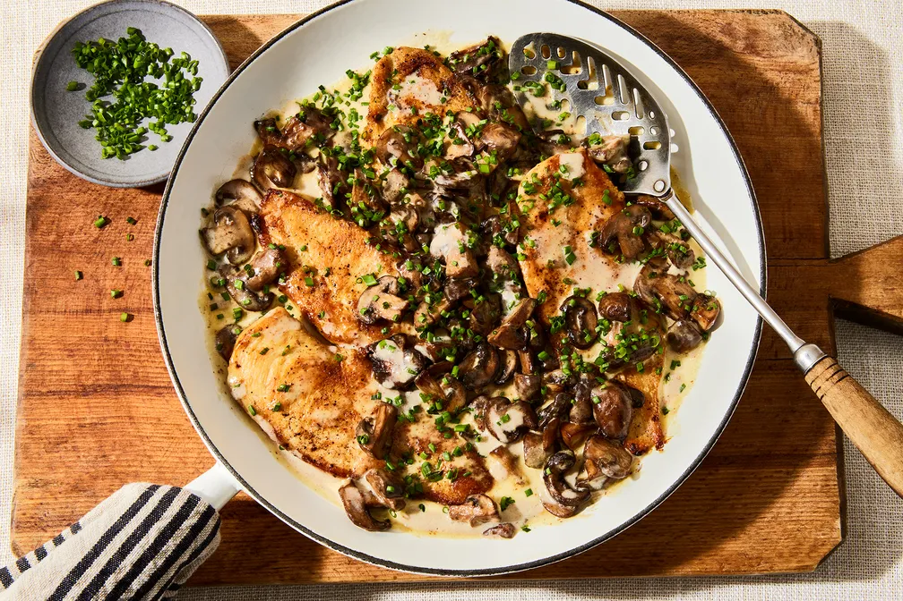

Creamy Weeknight Mushroom Chicken

Description
This meal is delicious and makes for a meal that can feel fancy in the middle of the week!
Ingredients
- 1 pound baby bella (aka cremini) mushrooms
- 4 tablespoons unsalted butter, divided
- 2 (about 1 pound) boneless, skinless chicken breasts
- Kosher salt and freshly ground black pepper
- 1 cup heavy cream
- 2 tablespoons Dijon mustard, preferably grainy
- 1/3 cup finely chopped chives (or parsley or dill)
Directions
- Wash and dry the mushrooms (and don’t remove the stems—they’re delicious). Slice half. Quarter the other half.
- Set a large skillet over medium heat and add 2 tablespoons of butter. When the butter is melted and starting to turn golden, add all the mushrooms and toss to coat. (This looks ridiculous, but it’ll work out.) Cook for 10 to 15 minutes, stirring occasionally, until they’re browned and starting to stick to the pan, with no remaining mushroom liquid.
- Meanwhile, horizontally halve the chicken breasts, then use a mallet or heavy skillet to pound the pieces to an even ¼-inch thickness. Pat chicken dry, then season all over with salt and pepper.
- Stir the mustard into the cream with a fork (directly in its measuring cup to save a dish).
- When the mushrooms are browned and sticking, sprinkle with salt and pepper, then deglaze with ⅓ cup of water.
- Let the water come to a boil while you set another large skillet (preferably cast-iron or enamel) over medium-high heat and add the remaining 2 tablespoons of butter. When the butter is melted and starting to brown, add the chicken. Cook for about 5 minutes, until the bottom is deeply browned and crusty. You can rotate the pan halfway through and press down on the chicken if it starts to curl up, but don’t shuffle it around.
- As soon as the chicken starts cooking, stir the mustard-cream into the mushrooms. Vigorously simmer for about 5 minutes, stirring once or twice, until pale brown and thickened enough to coat the back of a spoon, then turn off the heat. Season to taste with mustard, salt, and pepper.
- Flip the chicken and cook for about 1 minute more, until just cooked through (165°F on an instant-reader thermometer or opaque in the thickest part). Turn off the heat.
- Spoon the creamy mushrooms on and around the chicken. Shower all over with the chives and serve directly out of the skillet.
Home